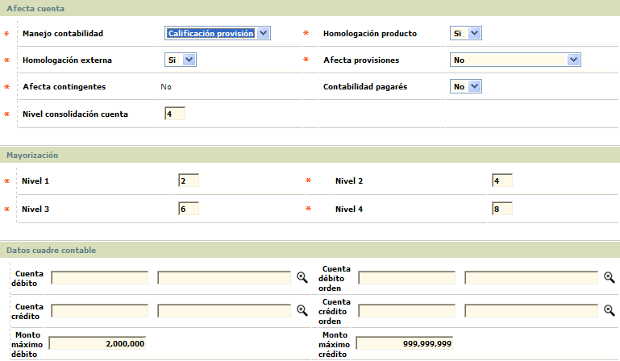

Parámetros contables |
Desde este formulario la entidad puede definir todos los conceptos que se tendrán en cuenta para la generación de la información contable requerida. Debe tenerse en cuenta que cuando se vaya a efectuar la parametrización relacionada con productos Débito algunos formularios y campos no son aplicables, lo cual se indicará a lo largo del presente documento.
La opción contiene cuatro hipervínculos que permiten invocar otros formulario desde los cuales se parametriza la información correspondiente al Ejercicio contable, Plan contable, Terceros y Chequeo.
El formulario de análisis contable contiene las opciones Actualizar y Eliminar.
Actualizar: Si el usuario invoca la opción Actualizar se despliega un nuevo formulario que se encuentra dividido en tres bloques de datos: Afecta cuenta, Mayorización y Datos cuadre contable con los siguientes campos:

Descripción de campos
Manejo
contabilidad |
En este campo obligatorio tipo combo se selecciona entre Edad mora, Calificaci�n externa, Calificaci�n provisi�n o Calificaci�n sistema, la manera de registrar la contabilidad de acuerdo con el estado de los saldos del cliente, respecto a la maduración de su cartera. |
Homologación
producto |
Campo tipo combo, obligatorio, en el que se puede seleccionar entre Si o No se debe verificar la calificación de todos los productos que el cliente posea con la entidad y que sean administrados por BANKBU� aplicando a todos los productos del cliente la mas alta (mala) registrada. |
Homologación
externa |
En este campo tipo combo, obligatorio, se indica Si o No la calificación obtenida por en la homolgación por producto, se debe homologar con otras calificaciones obtenidas de sistemas externos a BANKBU�. Es importante señalar que la entidad puede hacer la homologación por producto sin requerir la externa, pero no al contrario, es decir, si se va a hacer homologación externa se requiere obligatoriamente que exista previamente la homologación por producto. |
Afecta provisiones |
Campo obligatorio tipo combo en el que se selecciona entre Afectación por modalidad o Afectación por tipo de cartera la manera como se hará la provisión sobre la cartera de la entidad siempre y cuando ésta se haga en BANKBU�. Los porcentajes a aprovisionar se parametrizan para cada modalidad o tipo de cartera en la opción Calificaciones. |
Afecta
contingentes |
Este campo es de salida y muestra siempre el valor No, para indicar que la afectación de contingentes no se hace por transacción sino cuando la entidad ejecute el proceso respectivo bien sea diariamente, mensualmente, etc. |
Contabilidad pagarés |
Campo tipo combo que permite indicar Si o No al momento de aprobar o cancelar un crédito se debe generar el registro contable con base en el documento que garantíza el mismo. |
Nivel consolidación cuenta |
En este campo se registra el nivel de mayorización con el cual se generará la interface con destino al sistema contable central de la entidad de acuerdo con los niveles de mayorización que se definen en los campos siguientes. |
Nivel
1 / 2 / 3 / 4 |
Campos obligatorios que le permiten a la entidad definire el nivel de agrupamiento o número de posiciones de la cuenta contable con la cual será mostrada la información contable. Por ejemplo, si la entidad define que el nivel 1 será de 4 posiciones, dicha cuenta debe parametrizarse y señalarse como cuenta mayor para que los valores que se afectaron por cada cuenta sean sumados y mostrados en dicho nivel. Igual opera para los demás niveles, teniendo siempre presente que de los parámetros aquí definidos depende la condensación de la información que se reflejará en la opción análisis contable. Todos son campos numéricos de hasta 2 posiciones, que contienen un rango de 1 hasta 19 correspondiente al total de posiciones de la cuenta contable, donde se digita el número de posiciones a asignar a cada nivel de mayorización de acuerdo con los procedimientos contables de la entidad. Es importante aclarar que el nivel cuatro debe corresponder al de mayor número de posiciones de la cuenta contable. |
Cuenta
débito |
En
este campo con lista de valores se puede seleccionar la cuenta que se
va a utilizar para efectuar los ajustes por descuadres de tipo débito
presentados en el movimiento y que se ven reflejados en el análisis
contable. |
Cuenta
débito orden |
Campo con lista de valores en el que se puede seleccionar la cuenta que se va a utilizar para efectuar los ajustes para cuentas de orden por descuadres de tipo débito presentados en el movimiento. |
Monto
máximo débito |
En este campo numérico de hasta 14 enteros y 2 decimales se registra el valor máximo hasta el cual se podrán efectuar ajustes tipo débito en las cuentas respectivas. |
Cuenta
crédito |
En
este campo con lista de valores se puede seleccionar la cuenta que se
va a utilizar para efectuar los ajustes por descuadres de tipo crédito
presentados en el movimiento y reflejados en el análisis
contable.. |
Cuenta
crédito orden |
Campo con lista de valores en el que se puede seleccionar la cuenta que se va a utilizar para efectuar los ajustes para cuentas de orden por descuadres de tipo crédito presentados en el movimiento. |
Monto
máximo crédito |
Campo numérico de hasta 14 enteros y 2 decimales en el que se indica el valor máximo hasta el cual se podrán efectuar ajustes tipo crédito en las respectivas cuentas parametrizadas anteriormente. |
Ejercicio contable: si el usuario invoca el hipervìnculo Ejercicio contable se despliega un nuevo formulario que permite definir las fechas en las cuales se van a efectuar los cierres de ejercicio contable de acuerdo con la legislación vigente y/o a las políticas de la entidad.
El formulario de contiene las opciones Adicionar, Actualizar y Eliminar.
Adicionar: si el usuario invoca la opción Adicionar se despliega un nuevo formulario con los siguientes campos.
Descripción de campos
Número |
Campo numérico de hasta 2 dígitos, obligatorio, en el que se registra de manera secuencial el orden o consecutivo del ejercicio contable para el cual se van a definir sus fechas. |
Fecha
inicial |
Este campo obligatorio permite registrar en formato YYYY-MM-DD la fecha a partir de la cual comienza el ejercicio contable correspondiente al consecutivo o secuencia anterior. |
Fecha
final |
Campo obligatorio en el que se indica en formato YYYY-MM-DD la fecha en la que finaliza el ejercicio contable. |
Actualizar: si el usuario selecciona un registro invoca la opción Actualizar se despliega un formulario en el cual los campos modificables son Fecha inicial y Fecha final.

si el usuario invoca el hipervìnculo Plan contable se despliega un nuevo formulario que permite a la entidad parametrizar las cuentas contables a utilizar para el registro de sus operaciones diarias así como definir las características de dichas cuentas. Este formulario cuenta con tres hipervínculos que le permiten al usuario Copiar una cuenta, Mover una cuenta y parametrizar el Nivel general de agrupación contable.
La opción cuenta con un filtro que le permite al actor efectuar consultas específicas por el Tipo de cuenta, Número de cuenta o Naturaleza de la misma.
El formulario de contiene las opciones Actualizar, Eliminar, Adicionar y Detalle.
Adicionar: si el usuario invoca la opción Adicionar se despliega un nuevo formulario con los siguientes campos.
Descripción de campos
Número |
En este campo numérico de hasta 19 dígitos, obligatorio, se registra el código de la cuenta contable. |
Descripción |
Campo
alfanumérico de 60 caracteres, obligatorio, en el que se
indica el nombre o descripción de la cuenta contable. |
Tipo
cuenta |
En este campo tipo combo, obligatorio, se selecciona entre Mayor o Detalle la característica de la cuenta. Si se indica Mayor, con excepción del campo Naturaleza, los demás contenidos en este formulario se inhabilitan. |
Naturaleza |
Campo obligatorio tipo combo en el que se selecciona entre Débito o Crédito la naturaleza propia de la cuenta de acuerdo con los principios de contabilidad generalmente aceptados. |
Sucursal |
En este campo obligatorio tipo combo se indica Si o No la cuenta pertenece a sucursales o agencias. |
Oficina |
Campo obligatorio tipo combo que permite seleccionar entre Si o No la cuenta es base para determinar la distribución de utilidades por oficina. |
Acumula
mes |
En
este campo obligatorio tipo combo se indica Si o No
la cuenta acumula saldos mes a mes. |
Ajustes |
Campo obligatorio tipo combo que permite seleccionar entre Si o No la cuenta permite efectuar ajustes a la misma. |
Conversión
moneda |
En este campo obligatorio tipo combo se indica Si o No la cuenta realiza el proceso de conversión del tipo de moneda del registro a la utilizada como patrón. |
Resultados |
Campo obligatorio tipo combo que permite seleccionar entre Si o No la cuenta contable que se está definiendo pertenece a una cuenta de resultados, para efectos de iniciación de saldos en cada ejercicio contable. |
Impuestos |
En este campo obligatorio tipo combo se indica Si o No la cuenta corresponde a registros de impuestos. |
Provisión |
Campo obligatorio tipo combo que permite seleccionar entre Si o No la cuenta corresponde a provisión de cartera, intereses y comisiones, para efectos de la generación de la información correspondiente. |
Terceros |
En este campo obligatorio tipo combo se indica Si o No la cuenta tiene manejo de terceros para mostrar la información de identificación de la persona o comercio que generó el movimiento. Solo cuando se ha seleccionado la opción Si, se habilitan los campos Tipo identificación y Número identificación. |
Tipo
identificación |
Campo con lista de valores de la cual se selecciona el tipo de documento de identidad correspondiente al tercero asociado con la cuenta. |
Número
identificación |
En este campo alfanumérico de hasta 16 caracteres se registra el número de identificación del tercero asociado a la cuenta. |
Actualizar: si el usuario selecciona un registro invoca la opción Actualizar se despliega un formulario en el cual el único campo NO modificable es el Número de la cuenta siempre y cuando el tipo de cuenta sea Detalle. Cuando el tipo de cuenta es Mayor los únicos campos modificables son Descripción, Tipo cuenta y Naturaleza.

Detalle: si el usuario selecciona un registro invoca la opción Detalle se despliega un formulario en el cual ninguno de sus campos es modificable.
Copiar cuenta: si el usuario invoca el hipervìnculo Copiar cuenta se despliega un nuevo formulario que permite a la entidad filtrar los parámetros actuales de una cuenta para replicarlos en otra cuenta diferente.
Descripción de campos
|
Cuenta origen |
Campo de salida que muestra el código y descripción de la cuenta origen de la cual se va a tomar la información a copiar en la cuenta destino |
|
Cuenta destino |
En este campo con lista de valores se selecciona la cuenta contable a la cual se desean copiar los parámetros de la cuenta origen. |
Edad
mora origen |
Campo tipo combo en el cual se indica la altura de mora actual de los registros que se desea copiar a la cuenta destino. |
Edad
mora destino |
En
este campo tipo combo se selecciona la edad de mora con la cual
deben pasar los registros a copiar de la cuenta origen. |
Garantía
origen |
Campo tipo combo en el cual se indica el tipo de garantía actual de los registros que se desea copiar a la cuenta destino. |
Garantía
destino |
En este campo tipo combo se selecciona el tipo de garantía con el que deben pasar los registros a copiar de la cuenta origen. |
Modalidad
origen |
Campo tipo combo en el cual se indica modalidad de crédito actual de los registros que se desea copiar a la cuenta destino. |
Modalidad
destino |
En este campo tipo combo se selecciona la modalidad de crédito con la que deben pasar los registros a copiar de la cuenta origen. |
Calificación
sistema origen |
Campo con lista de valores de la cual se selecciona la calificación del sistema actual de los registros que se desea copiar a la cuenta destino. |
Calificación
sistema destino |
En este campo contiene lista de valores que permite seleccionar la calificación del sistema con la que deben pasar los registros a copiar de la cuenta origen. |
Calificación
externa origen |
Campo con lista de valores de la cual se selecciona la calificación externa actual de los registros que se desea copiar a la cuenta destino. |
Calificación
externa destino |
En este campo contiene lista de valores que permite seleccionar la calificación externa con la que deben pasar los registros a copiar de la cuenta origen. |
Calificación
provisión origen |
Campo
con lista de valores de la cual se selecciona la calificación
para provisión actual de los registros que se desea
copiar a la cuenta destino. |
Calificación
provisión destino |
En
este campo contiene lista de valores que permite seleccionar la
calificación
para provisión con la que deben pasar los registros
a copiar de la cuenta origen. |
Moneda
origen |
Campo con lista de valores de la cual se selecciona la moneda actual de los registros que se desea copiar a la cuenta destino. |
Moneda
destino |
En este campo contiene lista de valores que permite seleccionar la moneda con el que deben pasar los registros a copiar de la cuenta origen. |
Origen
(origen) |
Campo con lista de valores de la cual se selecciona el origen actual de los registros que se desea copiar a la cuenta destino. |
Origen
(destino) |
En este campo contiene lista de valores que permite seleccionar el origen con el que deben pasar los registros a copiar de la cuenta origen. |
Transacción
origen |
Campo con lista de valores de la cual se selecciona la transacción interna crédito o débito actual de los registros que se desea copiar a la cuenta destino. |
Transacción
destino |
En este campo contiene lista de valores que permite seleccionar la transacción interna crédito o débito con la que deben pasar los registros a copiar de la cuenta origen. |
Marca
origen |
Campo con lista de valores de la cual se selecciona la marca actual de los registros que se desea copiar a la cuenta destino. |
Marca
destino |
En este campo contiene lista de valores que permite seleccionar la marca con la que deben pasar los registros a copiar de la cuenta origen. |
Bin
origen |
Campo con lista de valores de la cual se selecciona el bin actual de los registros que se desea copiar a la cuenta destino. |
Bin
destino |
En este campo contiene lista de valores que permite seleccionar el bin con el que deben pasar los registros a copiar de la cuenta origen. |
Producto
origen |
Campo con lista de valores de la cual se selecciona el segmento actual de los registros que se desea copiar a la cuenta destino. |
Producto
destino |
En este campo contiene lista de valores que permite seleccionar el segmento con el que deben pasar los registros a copiar de la cuenta origen. |
Grupo
de afinidad origen |
Campo con lista de valores de la cual se selecciona el grupo de afinidad actual de los registros que se desea copiar a la cuenta destino. |
Grupo
de afinidad destino |
En este campo contiene lista de valores que permite seleccionar el grupo de afinidad con el que deben pasar los registros a copiar de la cuenta origen. |
Mover cuenta: si el usuario invoca el hipervìnculo Mover cuenta se despliega un nuevo formulario que permite a la entidad filtrar los parámetros actuales de una cuenta para quitarlos de allí y enviarlos a otra cuenta diferente.
La descripción de los campos es la misma dada para el formulario Copiar cuenta por lo cual no se relacionan nuevamente los campos respectivos.
Nivel general de agrupación contable: si el usuario invoca el hipervìnculo Nivel general de agpación contable se despliega un nuevo formulario que permite a la entidad definir las características que deben reunir los registros para poder ser enviados a determinada cuenta contable.
El formulario contiene las opciones Actualizar, Eliminar, Adicionar y Detalle.
Adicionar: si el usuario invoca la opción Adicionar se despliega un nuevo formulario con los siguientes campos.
Descripción de campos
|
Moneda |
Campo obligatorio con lista de valores de la cual se selecciona la moneda con la cual debe llegar el registro para poder ser incluido en la cuenta contable. |
Tipo
cuenta |
Campo tipo combo obligatorio, en el que se selecciona entre Débito o Crédito el tipo de cuenta con el cual debe llegar el registro para poder ser incluido en la cuenta contable. |
| Transacción | En este campo con lista de valores se selecciona la transacción interna crédito o débito con la cual debe llegar el registro para poder ser incluido en la cuenta contable. |
|
Concepto
contable |
En este campo con lista de valores, obligatorio, se selecciona el concepto contable que debe generar el registro a determinada cuenta. |
| Identificador contable | Campo con lista de valores en el que se selecciona el identificador contable con el cual se reconoce el movimiento para efectuar los respectivos registros a la cuenta contable. |
Origen |
Campo con lista de valores de la cual se selecciona el origen con el cual debe llegar el registro para poder ser incluido en la cuenta contable. |
| Bin | En este campo con lista de valores se selecciona el bin con el cual debe llegar el registro para poder ser incluido en la cuenta contable. Para poder utilizar los campos Producto y Grupo de afinidad es necesario que se parametrice algún valor en este campo. |
| Producto | Campo con lista de valores de la cual se selecciona el segmento con el cual debe llegar el registro para poder ser incluido en la cuenta contable. Aplica si se ha seleccionado algún Bin |
| Grupo de afinidad | Campo con lista de valores en el que se selecciona el identificador contable con el cual se reconoce el movimiento para efectuar los respectivos registros a la cuenta contable. |
Calificación
sistema |
En
este campo con lista de valores se selecciona la calificación
del sistema con la cual debe llegar el registro para poder
ser incluido en la cuenta contable. |
Calificación
externa |
Campo con lista de valores de la cual se selecciona calificación externa con la cual debe llegar el registro para poder ser incluido en la cuenta contable. |
Calificación
provisión |
Campo con lista de valores de la cual se selecciona calificación para provisión con la cual debe llegar el registro para poder ser incluido en la cuenta contable. |
| Línea de crédito | Campo con lista de valores de la cual se selecciona la línea de crédito con la cual debe llegar el registro para poder ser incluido en la cuenta contable. |
Sucursal |
En este campo con lista de valores se selecciona la sucursal con la cual debe llegar el registro para poder ser incluido en la cuenta contable. |
| Oficina radicación | Campo con lista de valores de la cual se selecciona la oficina en la cual se activó la tarjeta, con la cual debe llegar el registro para poder ser incluido en la cuenta contable. |
Marca |
En este campo con lista de valores se selecciona la marca con la que debe llegar el registro para poder ser incluido en la cuenta contable. |
Tipo
cartera |
Campo con lista de valores de la cual se selecciona el Tipo de cartera con el cual debe llegar el registro para poder ser incluido en la cuenta contable. |
Edad
mora |
En este campo tipo combo se selecciona la edad de mora con la cual debe llegar el registro para poder ser incluido en la cuenta contable. |
Garantía |
Campo tipo combo en el que se selecciona entre Personal o Real el Tipo de garantía con el cual debe llegar el registro para poder ser incluido en la cuenta contable. |
Tipo
cuenta |
Campo tipo combo obligatorioen el que se selecciona entre Ahorros o Corriente el tipo de cuenta con el cual debe llegar el registro para poder ser incluido en la cuenta contable. |
Modalidad
de crédito |
En este campo tipo combo se selecciona entre Consumo, Microcrédito o Comercial la modalidad de crédito con la cual debe llegar el registro para poder ser incluido en la cuenta contable. |
Cuenta
conversión |
Este campo se habilita cuando en el campo moneda se selecciona una que sea diferente a la local, y permite seleccionar de la lista de valores la cuenta contable a utilizar en el momento que se efectúe la conversión de esa moneda a la local. |
Actualizar: si el usuario selecciona un registro e invoca la opción Actualizar se despliega un formulario en el que mayoría de los campos son modificables segun lo definido en Parámetros contables, Afecta cuenta, campo Maneja contabilidad.
Detalle: si el usuario selecciona un registro e invoca la opción Detalle se despliega un formulario con la información completa del registro y en el que ninguno de sus campos es modificable.

La opción cuenta con un filtro que le permite al usuario consultar los registros por el identificador, concepto o el manejo.
El formulario contiene las opciones Actualizar, Eliminar y Adicionar
Adicionar: si el usuario invoca la opción Adicionar se despliega un nuevo formulario con los siguientes campos.
Descripción de campos
|
Identificador contable |
Campo obligatorio con lista de valores de la cual se selecciona el identificador contable con el que se reconoce el movimiento para efectuar los respectivos registros contables a determinada cuenta. |
|
Concepto transacción |
En este campo obligatorio con lista de valores se selecciona el concepto de la transacción asociado con el identificador contable. |
Manejo |
Campo tipo combo del que se selecciona entre Código cliente, Código tarjeta,Identificación cliente, Identificación tarjeta, Número tarjeta o Comercio, la manera como se generó el movimiento. |
Actualizar: si el usuario selecciona un registro e invoca la opción Actualizar se despliega un formulario en el cual el único campo modificable es Manejo.
Chequeo: si el usuario invoca el hipervìnculo Chequeo se despliega un nuevo formulario en el cual la entidad puede consultar la parametrización existente para el conjunto de criterios seleccionado.
Por medio del filtro el usuario puede seleccionar aquellos criterios para los cuales requiere consultar la información de parametrización contable:
Descripción de campos
Cuenta |
Campo con lista de valores de la que se selecciona la cuenta para la que se desea consultar la parametrización contable. |
Moneda |
Este campo contiene lista de valores para seleccionar la moneda para la cual se desea consultar la parametrización contable. |
Identificador |
Campo
con lista de valores de la que se selecciona el identificador
contable para el que se desea consultar la parametrización
contable. |
Concepto
contable |
En
este campo tipo combo se selecciona el concepto contable para el
que se desea consultar la parametrización contable. |
Garantía |
Campo
tipo combo en el que se indica entre Personal y Real
el tipo de garantía para el cual se desea consultar la parametrización
contable. |
Origen |
Este
campo contiene lista de valores para seleccionar el origen
para el cual se desea consultar la parametrización contable. |
Transacción |
Campo con lista de valores de la que se selecciona la transacción para la que se desea consultar la parametrización contable. |
Franquicia |
Este
campo contiene lista de valores para seleccionar la
marca para el cual se desea consultar la parametrización
contable. |
Asiento |
Campo tipo combo en el que se selecciona entre Debito o Crédito el tipo de registro para el cual se desea consultar la parametrización contable. |
El formulario cuenta con el hipervínculo Copiar parámetros y la opción Detalle.
Detalle: si el usuario selecciona un registro e invoca la opción Detalle se despliega un formulario con todos los datos del registro y que no permite modificar ningún campo.